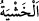
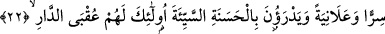

Rivâyet edilir ki bir kadın, bir kediyi hapsedip ölünceye kadar yiyecek vermediği için
azâba uğramıştır. Bir kadın da susuz bir köpeğe ayakkabısıyla su vermesi sebebiyle
Allah ona merhamet etmiş ve bağışlamıştır.[124]
Bir rivâyette “Nice hayvan vardır ki üzerine binenden daha hayırlıdır.”[125]
denilmiştir. Ehl-i Hak bu ilmi, bütün canlıların haklarına riâyet etmekle kazanmışlardır.
Genel mânâda “Rablerinden” O’nun tehdidinden “sakınan ve” özel mânâda da “kötü
hesaptan korkan kimselerdir.” Dolayısıyla hesaba çekilmeden önce kendilerini hesâba
çekerler.
Ebû Hilâl Askerî şöyle der: “
(korku)”, istenmeyen şeylerle ve istenmeyen
şeylerin başa gelmesiyle ilgilidir. ‘Zeyd’den korktum’ dendiği gibi ‘hastalıktan korktum’
da denir. Nitekim Allah Teâlâ hem “Üstlerindeki Rablerinden korkarlar” (en-Nahl,
16/50); hem de “kötü hesaptan korkarlar” buyurmuştur.
“
(çekinme, sakınma)” ise istenmeyen durumların başa gelmesiyle ilgili bir
kelimedir. İstenmeyen durumun bizzat kendisinden korkmaya haşyet denmez. Bu sebeple
Allah: “Rablerinden sakınan ve kötü hesaptan korkan kimselerdir.” buyurmuştur.”
Kötü hesabın mahiyeti biraz önce geçmişti.
Korku (havf), kalbin en büyük ve en faydalı menzillerindendir ve herkese farzdır.
Her kim ki korkar, onu emin ederler
Gerçekten korkan gönlü sâkin ederler
22. Yine onlar, Rablerinin rızasını isteyerek sabreden, namazı dosdoğru kılan,
kendilerine verdiğimiz rızıklardan gizli ve açık olarak (Allah yolunda) harcayan ve
kötülüğü iyilikle savan kimselerdir. İşte onlar var ya, dünya yurdunun (güzel) sonu
sadece onlarındır.
“Yine onlar,” ne mahlûkatın görüp duymasına ne de nefislerinin kendilerini
beğenmesine önem vererek; sadece “Rablerinin rızâsını isteyerek” nefislerinin hoşuna
gitmeyen çeşitli musîbetlere ve ilâhî tekliflerin zorlukları karşısında hevâ ve
heveslerine karşı “sabreden” kimselerdir.
Bilesin ki sabra konu olan birçok husus vardır: Bunlardan birisi, körlüğe sabretmektir.
Kudsî bir hadiste şöyle buyrulmuştur: “Kulumu iki sevgilisiyle -yani gözleriyle-
imtihan ettiğimde Allah’ın kazâsına râzı olarak buna sabredecek olursa onların
yerine kendisine cenneti veririm.”[126] Bir insanın en değerli, en çok sevdiği varlığı
gözleri olduğundan bu hadiste ‘sevgili’ lâfzıyla zikredilmiştir.